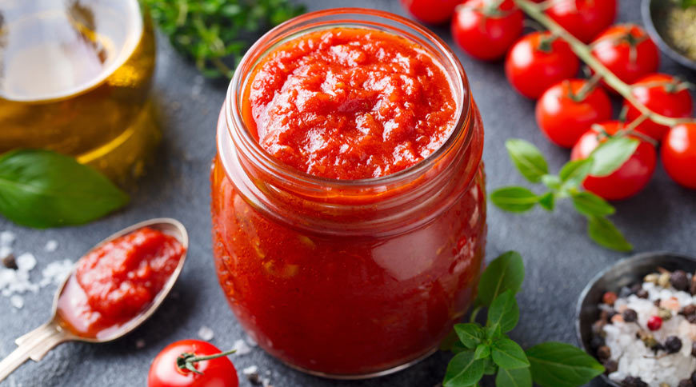
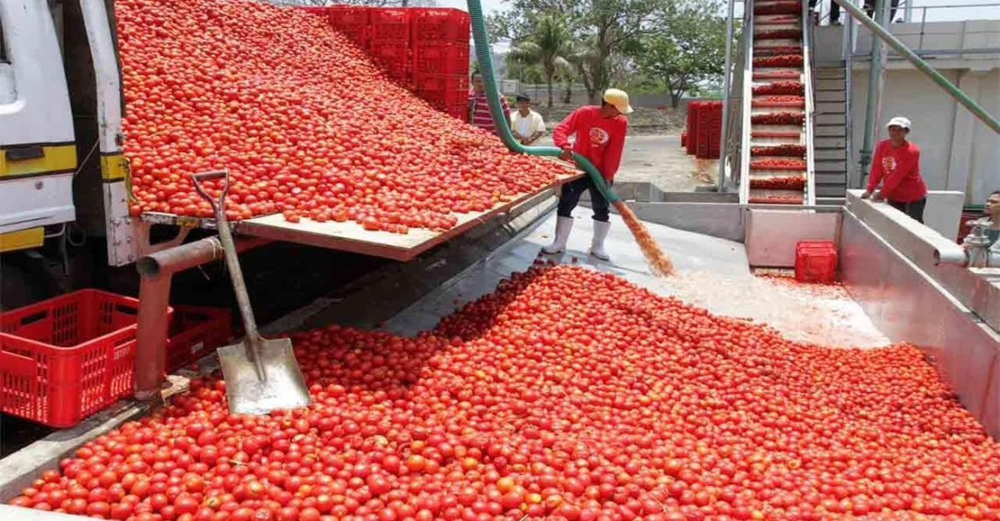

Bienvenue chez TOMACO
TOMACO, c’est le concentré de tomates 100% congolais. Nous soutenons l’agriculture locale en transformant des tomates fraîches cultivées par nos agriculteurs partenaires. Savoureux, naturel, sans conservateurs – juste le vrai goût du Congo dans votre assiette !

100% Naturel
Sans additifs ni conservateurs, notre concentré est pur et sain.

Fiers du local
Nos tomates sont cultivées et transformées au Congo.
Pour toute la famille
Un goût que tout le monde aime, pour tous vos plats préférés.